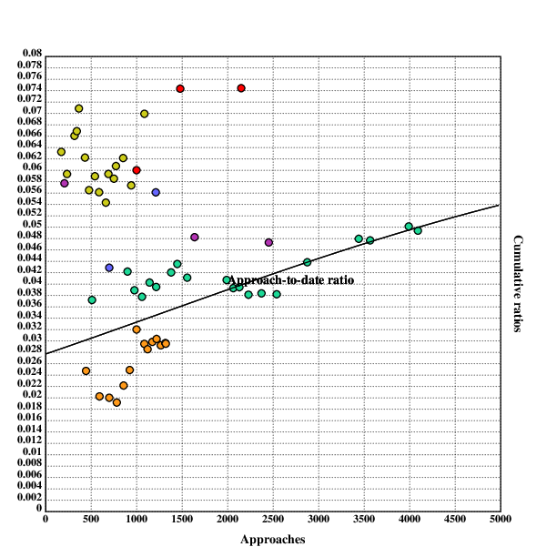

author: niplav, created: 2019-12-25, modified: 2020-03-29, language: english, status: in progress, importance: 4, confidence: remote
Is daygame worth it, and if yes, how much? I first present a simple point-estimate cost-benefit value estimation written in Klong and find that daygame is probably worth ~\$1000 maximum, at ~500 approaches, though the number varies strongly under different assumptions. After that, I modify the model to capture more of the nuance, and arrive at _. I then perform a Monte-Carlo estimation to determine the uncertainty around the expected value and find that in the simple case the value of daygame ranges from -\$3300 to \$3200 (5th/95th percentile), with a median of \$900 and a mean of \$550, and in the complex case _.
Daygame is the art of meeting and attracting women during the daytime in different locations and at different times of the day.
– Sebastian Harris, “Daygame: A Quick Beginner’s Guide“, 2018
Many daygamers follow the London Daygame Model which is fairly linear and based on approaches that last 5-10 minutes each.
Is this method of daygame worth it, and if yes, how much should one be doing?
In this text, I first review existing texts on the topic and find them lacking in several ways. I then present a simple and general model for the value of doing a number of daygame approaches, and find that it recommends doing 484 approaches with a value of \$969 in the optimum. I then extend the model to more subjective and hard to measure factors such as positive side effects, effects of daygame on mood and similar other factors, and estimate that _.
The models presented don't consider externalities, be they positive or negative. That is the subject of a different debate.
One already existing cost analysis of game is Free Northerner 2012, he focuses on nightgame in bars and clubs and concludes that
Cost for Sex [from prostitution]: \$300
Cost for sex [from game]: \$460 (\$200 is you enjoy clubbing, gaming, and dating for their own sake)
[…]
For casual sex, a mid-range prostitute is cheaper than game. On the other hand, most of game’s costs are in the form of time opportunity costs, so if you have a lot of free time and little money or you enjoy the activities of clubbing, game, or dating even without the promise of sex, then game might be a better deal. In addition, the higher your average wage, the more expensive game becomes relative to prostitution, as the opportunity costs of game increase the more potential earning you sacrifice. Conclusion: For obtaining casual sex, game is the better option if you are paid low wages and have free time or if you enjoy game and related activities. Prostitution is the better option if you are middle-class, don’t have the free time, or dislike engaging in game.
– Free Northerner, “Economic Analysis of Casual Sex – Prostitution vs Game”, 2012
(Inconsistent capitalization is in the original text)
However, his analysis doesn't take daygame into account (he mentions it at the end). Daygame seems to me to be a much better option (not just for people who don't like nightclubs): it's healthy due to moving around a lot outside, getting drunk is mostly not an option, it doesn't mess up the sleep schedule, one doesn't have to pay to get into clubs, and it can be combined with sightseeing in foreign cities.
He also doesn't consider positive side-effects from game (such as increased confidence), negative side-effects from prostitution (such as addiction), and diminishing returns in his analysis.
In daygame-lingo, the word "ratio" usually refers to the ratio between approaches and contact information (such as phone numbers)/dates/women slept with (colloquially "lays"). In this text, I'm interested in the approach-to-date ratio (here the ratio of first dates to approaches) and the approach-to-lay ratio.
30 approaches will get me between 10 - 15 phone numbers.
Half of these phone numbers will flake leaving me messaging around 5 - 8 girls.
I will get half of these girls out on dates (between 2 - 4) and sleep with 1 or 2.
These are realistic stats, this is cold approach, cold approach is tough.
– James Tusk, “Realistic Daygame Statistics (Daygame Tips)”, 2017
James Tusk is a very good looking daygame coach, so these numbers are quite high.
daygamersbible
2018
proclaims
16.9% numbers/approaches, 22.4% dates/numbers and 37.1% lays/dates
(that would be $0.169*0.224=0.0378$ dates per approach, and
$0.169*0.224*0.371=0.0140$ lays per approach).
I remember a Tom Torero video where he recounts these ratios for beginners, but it seems to have been hidden since then (the internet archive version is also not complete. If you have a copy, I'd be glad to pay a small amount for it). The numbers for the approach-to-lay ratios were 1 in 100 for beginners, 1 in 50 for intermediate daygamers and 1 in 30 for experts. I will assume that this is comparatively over-optimistic, and assume that the date-to-lay ratio starts at 1 in 200, and then converges towards 1 in 50 on the scale of thousands of approaches:
ratiobegin::0.005
ratioexp::0.02
ratio::{ratiobegin+(ratioexp-ratiobegin)*(1-500%x+500)}
These numbers are of course heavily dependant on all kinds of factors: attractiveness, speed of learning, effort exerted in daygame, logistics and much much more.
I will also assume that one in three series of dates with the same woman leads to a lay:
dateratio::{3*ratio(x)}
Visualizing this shows the following:
.l("./load.kg")
.l("nplot")
grid([0 10000 1000];[0 0.07 0.002])
xtitle("Approaches")
ytitle("Cumulative ratios")
plot(ratio)
text(250;60;"Approach-to-lay ratio")
setrgb(0;0;1)
plot(dateratio)
text(200;250;"Approach-to-date ratio")
draw()
Fortunately, daygamers are often very diligent in keeping track records of their ratios and even publish them.
Here, I collect cumulative date and lay ratios from several blogs. I don't count idates as dates, because I'm not sure whether daygamers usually pay for them or not.
Note that these numbers are just stats some guys wrote on the internet, usual qualifiers about the accuracy of these values apply.
I am also not sure whether at some points "dates" was all dates combined, and later was split into "first date", "second date" etc. For simplicity I assume that in the beginning, "dates" simply referred to "first date". It still seems to be coherent.
Lay ratios:
rwlay::[[511 5][901 10][977 10][1060 11][1143 13][1216 14][1380 16][1448 18][1557 19][1990 27][2063 27][2130 27][2230 27][2373 31][2540 35][2876 44][3442 62][3567 63][3991 83][4092 84]]
rwlayrat::{(*x),%/|x}'rwlay
Date ratios:
rwdate::[[511 19][901 38][977 38][1060 40][1143 46][1216 48][1380 58][1448 63][1557 64][1990 81][2063 81][2130 84][2230 85][2373 91][2540 97][2876 126][3442 165][3567 170][3991 200][4092 202]]
rwdaterat::{(*x),%/|x}'rwdate
Seven (he says that "I started my daygame journey back in 2014", so there is information missing):
Lay ratios:
slay::[[38 3][176 4][238 5][318 8][344 9][367 11][434 12][478 13][543 13][588 14][663 15][691 15][752 17][774 18][853 20][942 20][1087 24]]
slayrat::{(*x),%/|x}'slay
Date ratios:
sdate::[[38 8][174 11][236 14][318 21][344 23][367 26][434 27][478 27][543 32][588 33][663 36][691 41][752 44][774 47][853 53][942 54][1087 76]]
sdaterat::{(*x),%/|x}'sdate
His numbers are quite high, and I'm not really sure why – perhaps a combination of only taking numbers from somebody experienced, combined with the fact that he does daygame in russia, which is supposedly easier than London, where most of the others publishing data do daygame.
Mr. White didn't publish statistics from the beginning (this data is from his 8th & 9th year of doing daygame), this information is therefore unfortunately incomplete:
Lay ratios:
mwlay::[[700 13][1212 25]]
mwlayrat::{(*x),%/|x}'mwlay
Date ratios:
mwdate::[[700 30][1212 68]]
mwdaterat::{(*x),%/|x}'mwdate
The 2019 review unfortunately doesn't contain the number of approaches, but he writes:
I got 11 lays this year and my approach to lay ratio was around 1:53 with roughly the same age and quality: an improvement on last year’s ratio.
– Thomas Crown, “2019 In Review”, 2020
From this one can deduce that the number of approaches was $11*53=583$,
or at least a number somewhere near that.
Lay ratios:
tclay::[[208 2][1638 20][2453 34][3036 45]]
tclayrat::{(*x),%/|x}'tclay
Date ratios (he talks about dates, but it's not clear what the number of first dates is. I'll still collect the data, but take with a grain of salt) (also, his 2019 review doesn't say anything about the number of dates, so that is omitted):
tcdate::[[208 12][1638 79][2453 116]]
tcdaterat::{(*x),%/|x}'tcdate
Krauser (who started sometime in 2009, I believe, so these numbers are after several years of training):
Most of these numbers rely upon estimates because I didn’t keep notes.
– Nick Krauser, “My 2013 Daygame Stats”, 2014
Lay ratios:
klay::[[1000 27][1480 50][2150 65]]
klayrat::{(*x),%/|x}'klay
Date ratios:
kdate::[[1000 60][1480 110][2150 160]]
kdaterat::{(*x),%/|x}'kdate
The plotted data for lay ratios looks like this:
.l("./load.kg")
.l("./data.kg")
.l("nplot")
grid([0 10000 1000];[0 0.04 0.002])
xtitle("Approaches")
ytitle("Cumulative ratios")
plot(ratio)
text(250;60;"Approach-to-lay ratio")
setdot(4)
:"Data for Roy Walker ratios"
fillrgb(0.109;0.847;0.588)
scplot2(rwlayrat)
:"Data for Mr. White ratios"
fillrgb(0.4;0.4;1)
scplot2(mwlayrat)
:"Data for Thomas Crown ratios"
fillrgb(0.7;0.2;0.7)
scplot2(tclayrat)
:"Data for Seven ratios"
fillrgb(0.8;0.8;0.1)
scplot2(slayrat)
:"Data for Krauser ratios"
fillrgb(1;0;0)
scplot2(klayrat)
draw()

Similarly, the data for reported date ratios:
.l("./load.kg")
.l("./data.kg")
.l("nplot")
grid([0 10000 1000];[0 0.08 0.002])
xtitle("Approaches")
ytitle("Cumulative ratios")
plot(dateratio)
text(200;250;"Approach-to-date ratio")
setdot(4)
:"Data for Roy Walker ratios"
fillrgb(0.109;0.847;0.588)
scplot2(rwdaterat)
:"Data for Mr. White ratios"
fillrgb(0.4;0.4;1)
scplot2(mwdaterat)
:"Data for Thomas Crown ratios"
fillrgb(0.7;0.2;0.7)
scplot2(tcdaterat)
:"Data for Seven ratios"
fillrgb(0.8;0.8;0.1)
scplot2(sdaterat)
:"Data for Krauser ratios"
fillrgb(1;0;0)
scplot2(kdaterat)
draw()

Daygame has several different obvious costs: opportunity costs from the time spent approaching and dating women who then flake (one could be doing better things in the same time, like pursuing other hobbies, learning a language or musical instrument) and simply the cost of paying for dates.
First you'll need to desensitise yourself to randomly chatting up hot girls sober during the day. This takes a few months of going out 3-5 times a week and talking to 10 girls during each session (keep each session to no more than 2 hours).
– Tom Torero, “Beginner's Guide to Daygame” p. 6, 2018
Most regular hustlers go out 3-5 times a week and do 10 approaches each session, meaning 30-50 per week.
– Tom Torero, “Beginner's Guide to Daygame” p. 13, 2018
I will assume that most daygamers will do around 4 approaches an hour (the ones I have met are more choosy, so they have a lower volume), with 15 minutes for one approach.
The opportunity cost of daygame is unclear – what would one be doing instead? One could dream of daygamers instead cultivating friendships, learning languages or instruments and meditating, and while that could certainly sometimes be the case, a lot of that time would also be spent on mindlessly browsing the internet, watching netflix or doing other things that aren't terribly fulfilling or valuable. Economists often assume that the opportunity cost of an activity to be the money one could have earned with a minimum wage job during that time, but that seems to go too far: an additional hour spent working might be net negative, even with taking wage into account (working hours have diminishing and at some point negative marginal returns because of exhaustion).
And daygame is generally an activity with comparatively much value: one spends time outside, moving around and interacting with other people.
On the other hand, it may be that daygame only replaces "productive personal time", that the energy exerted in daygame misses in other productive activities, while the amount spent on downtime & unfulfilling stuff stays constant.
I will tentatively set the opportunity cost of an hour of daygame to \$5, but would be interested in further input:
oppcost::5
Daygamers who could earn more with their day job might want to adjust this number upwards.
Free Northerner 2012 assumes 3 dates, it is common wisdom originating from Mystery that 7 hours is a normal time spent on dates until having sex.
Data from Roy Walker includes numbers of dates starting from 2018:
He reports 76 first dates, 27 second dates, 11 third dates and 5 fourth
dates. This means that he went on 5 dates with 4 women, on 3 dates with
$11-5=6$ women, and so forth. This means that the average number of dates he
went on per first date was
$\frac{5*4+(11-5)*3+(27-11)*2+(76-27)}{76} \approx 1.566$
– quite lower than the 3 assumed by Free Northerner
2012!
For Seven, the numbers can be found here:
He reports 76 first dates, 21 second dates, 13 third
dates, 6 fourth dates and 1 fifth date. This results in
$\frac{(1*5+(6-1)*4+(13-6)*3+(21-13)*2+(76-21))}{76} \approx 1.54$
dates per lay, again smaller.
Similarly, Thomas Crown reports 1.4 dates on average for a lay in his first year and 1.1 for his second.
I will assume 1.8 dates on average lasting 3.5h each, because the numbers above are from people who has already done many approaches:
datelen::3.5
avgdates::1.8
On dates, one usually needs to pay for drinks, food, and perhaps a taxi, there doesn't seem to be much information about the exact costs out there. I will assume \$20 for a date.
datecost::20
The cost of daygame is the sum of the opportunity cost from approaching, the opportunity cost of dates and the direct cost of paying for dates:
cost::{(oppcost*x%apprperhour)+(dateratio(x)*datecost*avgdates*x)+dateratio(x)*datelen*avgdates*oppcost}
The resulting function is linear on the number of approaches:
.l("./load.kg")
.l("nplot")
grid([0],maxappr,[1000];[-12000 0 500])
xtitle("Approaches")
ytitle("Cumulative dollar cost of dates")
plot(cost)
draw()

The thing providing most of the value from daygame is the sex with different women. Sex is not a homogenous commodity, but has a wildly differing value, depending on the attractiveness of the partner and their skill at sex. Nethertheless I will assume that the value of sex averages out to the value of prostitution.
I will consider two different components of the value: the value of the sex itself (as compared to prostitution) and the sense of pride and accomplishment (knowing that one is developing ones skills in daygame, while prostitution is often accompanied with shame).
According to this intro to escorting guide on a business blog for escorts (I guess escorts need business advice too; the weird things you find on the internet) costs about $250-500/hr depending on the city.
– Free Northerner, “Economic Analysis of Casual Sex – Prostitution vs Game”, 2012
This leaves us with ~\$300 per hour of prostitution.
An analysis of daygame contains some questions that are not obvious to answer:
I have not found any people discussing this, and there is probably a high variance in these numbers depending on the daygamer.
I will assume that one sex session lasts one hour and that the average daygamer sleeps with the same woman 4 times (some women become regular sex partners, even if the overwhelming majority is only a one-night stand).
I will also assume that the dimimishing returns on sex with different partners are square-rooted, because for men having sex with many partners has a high evolutionary benefit, and logarithmic returns would seem to punishing for that.
I will also assume that the diminishing returns on sex with the same partner is logarithmic, because for men, having sex multiple times with the same woman carries little evolutionary advantage except perhaps for competition with other mens sperm.
These numbers are only preliminary, informed by reading daygame blogs.
So we can calculate that the value of seducing one woman is
.l("math")
300*ln(4*e)
715.888308335967204
I will assume that the sense of pride and accomplishment is ~\$400. I have no hard numbers on this, but it seems like a good approximation, since this is just the number for the first daygame lay.
To wrap it up, one can conclude that the value of the first lay is
prostcost::300
prideval::400
laynum::4
firstlayval::prideval+prostcost*ln(e*laynum)
As said, I assume that the diminishing marginal returns on additional
sex partners can be calculated with the square root. The benefit of sex
can then be calculated with the square root of the expected amount of
sex for a given number of approaches and the value of the first lay.
Note that this number is cumulative, it considers the benefit of all
lays up to x approaches.
layvals::{firstlayval*sqr(ratio(x)*x)}
This looks like this for up to 10000 approaches:
.l("./load.kg")
.l("nplot")
grid([0],maxappr,[1000];[0 12000 500])
xtitle("Approaches")
ytitle("Cumulative dollar value of lays")
plot(layvals)
draw()

The benefit of approaching is then simply the value of the sex:
benefit::{layvals(x)}
To now calculate the optimal amount of daygame, one simply calculates the difference between cumulative benefit and cumulative cost for all possible number of approaches up to the maximum possible number (in this case 10000, more than that seems very difficult) and chooses the maximum:
maxappr::10000
vals::{benefit(x)-cost(x)}'!maxappr
optim::*>vals
484
optimben::vals@*>vals
969.13165157833204
So one can conclude that 484 approaches are optimal under these assumptions, with a value of \$969.13.
This can be visualized as well:
.l("nplot")
.l("./res.kg")
grid([0],maxappr,[1000];[-15000 15000 1000])
xtitle("Approaches")
ytitle("Cumulative total value")
plot({benefit(x)-cost(x)})
text(200;250;"Value")
setrgb(0;0;1)
plot(benefit)
text(200;400;"Benefit")
setrgb(1;0;0)
plot({-cost(x)})
text(250;60;"cost")
bar(optim;15000+optimben;10000)
draw()

Of course one might answer that the simple model fails to capture much of the subtlety of the situation: Proponents of daygame might mention positive psychological side-effects such as increased self-confidence and resilience to rejection. Opponents of daygame could point at direct financial expenditures (such as possibly having to buy new clothes, renting an apartment that is closer to good places for daygame), and also possible social and psychological costs (scars from constant rejection and mockery from being found out to be a pick up "artist"), if they ever stopped moaning about how they disapprove of daygame.
These influences are of course much harder to quantify, and the numbers presented here are mostly guesswork. As I get to know more daygamers and do more daygame myself, I intend to update and refine this model to better reflect reality.
Note that this slightly more complex model adds to the previous, simpler model. Previously assumed costs and benefits are not altered.
Besides sex, the additional benefits of daygame can be separated into two broad categories: Increases in subjective well-being (from cultivating a skill that requires effort and practice), and positive side effects such as increased salary resulting from a higher willingness to negotiate ones salary and search for other jobs.
Let's assume one does 1000 daygame approaches per year. Let's then assume that doing 1000 daygame approaches increases ones expected salary by 0.5% in the first year, with then logarithmic increases for each additional year, for 10 years. The parity purchasing power average annual wage in the US was \$60K in 2017, but many industrialized countries are lower. I'll assume that the average annual wage for a daygamer is \$40K, just to be safe.
The code for calculating the monetary value of the positive side-effects of doing x daygame approaches then is
annsal::40000
yearsben::10
increase::0.005
apppy::1000
sideeff::{yearsben*increase*annsal*ln(1+x%apppy)}

This one is tricky, especially for somebody who has never done any daygame approaches. Many daygamers seem to highly enjoy what they do, but that is probably mostly due to selection bias. I'll mostly rely on my personal experience and on this very biased sample set here, so take this with a grain of salt. That said, I haven't read any reports describing that the author stopped doing daygame due to stress or uncontrollable anxiety, although people who would do that would probably never start doing daygame in the first place.
To get to the point, I model the mental effects of daygame to be negative in the beginning (increased anxiety, self-doubt, and insecurity), and positive effects such as playful enjoyment, flow-states and extraverted enthusiasm setting after in after an initial hump. These positive states become less strong over time because of getting used to pickup. Specifically, the negative effects peak at ~80 approaches (with -\$500), and break even after ~300. The cumulative value approaches \$1900 over thousands of approaches.
To model this, I abuse a log-normal distribution to represent the value over time:
mental::{(10000*(ln.pdf((x*0.005)+0.5;1;1)))-1900}
Besides the cost for dates & opportunity costs, doing daygame might carry a great amount of various expenditures: some daygamers move to appartments that are closer to the centers of cities & are more expensive, there may be some costs from upgrading ones wardrobe, buying condoms and possibly sex toys.
In economics, costs are often divided into fixed costs (costs that are not dependent on the amount of goods produced, in this case approaches made) and variable costs (costs that are related to the amount of goods produced).
Making the distinction between fixed costs and variable costs is sometimes a bit tricky; similar in this case. Is buying new clothes a fixed or a variable cost? Clothes wear down over time, and need to be bought again, but the difference doing daygame makes in wearing down clothes is minor at best. Also, some costs will depend on the time in ones life doing daygame, but not on the amount of daygame: Doing daygame for 10 years, but only with 100 approaches a year, will have different fixed costs from doing it for a year, but 1000 approaches in that year. In making the distinction between what counts as a fixed cost in this case and what counts as a variable cost, I will mostly go with my gut feeling.
Note that it is also important to consider the counterfactual case: Would these expenditures be made if the person wasn't doing daygame?
To possible fixed costs I'd count the following:
Of course, not every daygamer pays for all of these.
Some of the above are dependent on the duration of the time in ones life one spends with daygame. Having better logistics is a good example: one can procrastinate daygaming and still be paying the higher rent for better logistics.
Also time-dependent is better hygiene (I assume mostly marginal improvements such as getting better haircuts, buying a bit more mouthwash & floss and shaving a bit more often) and fitness (at least the fee for gym memberships, weights don't need to be replaced that often).
For time-dependent costs, I assume that the daygamer is very committed, and does 1000 approaches per year.
I (without any research) assume that a daygamer will pay \$200 more per year for logistics.
It seems to be relatively common for daygamers to move because of daygame, I'll assume that 30% of them will do it.
I assume the daygamer counterfactually buys one vibrator (those who buy more probably would also have bought sex toys in the counterfactual case where they weren't doing daygame). A vibrator seems to cost ~\$30 on average.
Although buying sex toys has been recommended by for example The Red Quest 2019, I haven't heard much discussion of this, and therefore assume that only 10% of daygamers will buy any kind of sex toys.
Many daygamers seem to buy less flashy clothes, sometimes of higher quality. I'm unsure how much these clothes introduce additional costs and how much they just displace buying normal clothes. I'll pretty much baselessly assume that the cost overhead is \$80.
This seems like something many daygamers do, I'll assume 80%.
The global optimum is now calculated the same way as here:
optim::*>vals
1092
vals@*>vals
2378.70879018822807
The more complex model with additional considerations therefore recommends 1092 approaches, with a value of ~\$2378.71.
Graphically:
.l("nplot")
.l("./res_complex.kg")
grid([0],maxappr,[1000];[-20000 20000 1000])
xtitle("Approaches")
ytitle("Cumulative total value")
plot({benefit(x)-cost(x)})
text(200;250;"Value")
setrgb(0;0;1)
plot(benefit)
text(200;400;"Benefit")
setrgb(1;0;0)
plot({-cost(x)})
text(250;60;"cost")
bar(optim;20000+optimben;10000)
draw()

I have presented both a simple and a more complicated cost-benefit analysis for daygame. Both conclude that daygame is worth it, at around 500 approaches, but the value is not enormous, with only a thousand dollars, and decreases rapidly with less lenient assumptions.
I tentatively conclude that daygame may be worth it, but it's definitely not a surefire positive deal. Sign up for cryonics first.
Since there is a lot of uncertainty in the presented model, I thought it'd be good to make a Monte-Carlo version of the model using the website Guesstimate.
The model can be found here.